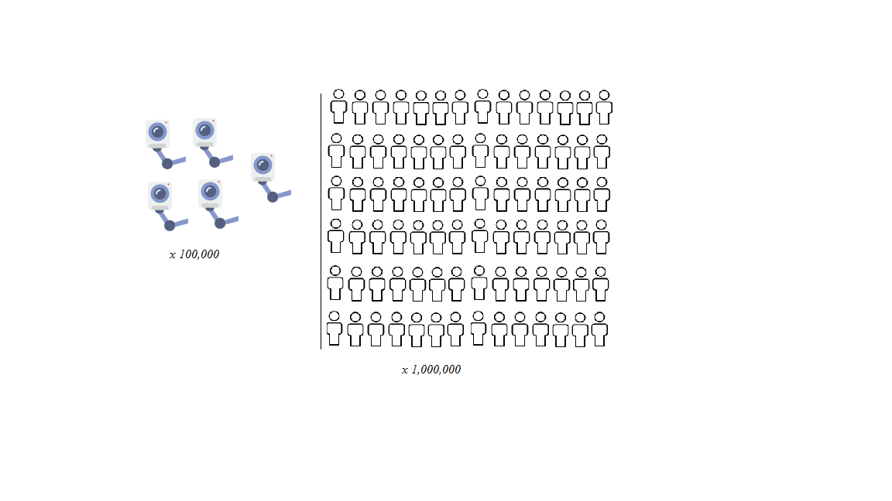

How many cameras are there in Britain?
The average camera views about 11 Brits at a time.

CCTV placed around in London views about 7 million people.
CCTV placed nationally views around 16 million people